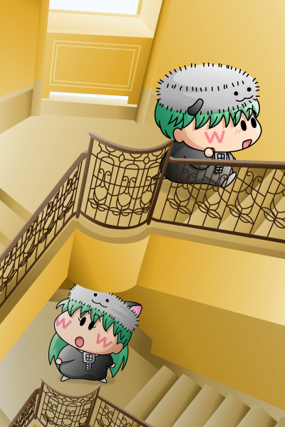

久々にアンリとセンリを描きたくなり、勢いで描いてみました(^^)。
舞台は私が先日宿泊したホテルモントレだったり(^^;。そこのパンフレットに載っていた写真が美しかったので、イラスト用にスキャン＆トレースを実施。写真の一部分を切り抜いているのでちょっと分かりにくいかな…螺旋状の階段をセンリとアンリが駆け上がっているという絵になります。
臆病な性格のこの二人、今もいろんな場所を二人で旅していそうな気がします。見たことのないものを見つけると、いつもの二人の相談が始まるんだろうな。
アンリ「この階段、どこまで続いているんだろうね、センリ」
センリ「どこまでも続いてそうな階段だね、アンリ」
アンリ「上ってみると分かるかもしれないね」
センリ「上ってみようよ！」
アンリ「上ってみよう！」
こんな感じで今も冒険を続けてくれているとうれしいです。
(2005/8/17)